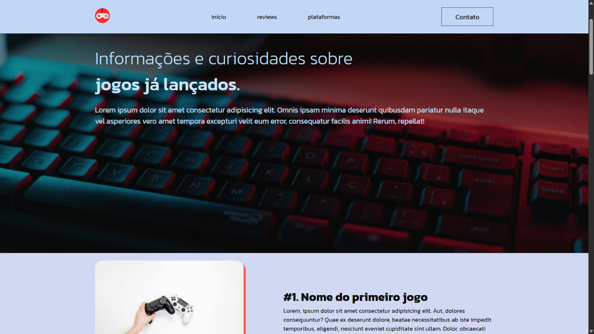
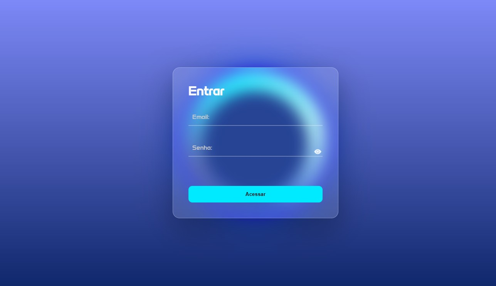

Sobre mim
Sou Pedro Leonardo Walter Araujo, Engenheiro de Software com foco em desenvolvimento web com foco em front-end.
Desde 2025, venho direcionando meus estudos para HTML, CSS e JavaScript, aplicando o conhecimento em projetos práticos como landing pages responsivas e um quiz interativo.
Tenho afinidade com a criação de interfaces organizadas, funcionais e visualmente agradáveis.
Estou sempre buscando evoluir minhas habilidades técnicas, com foco em boas práticas, estrutura semântica e experiência do usuário.
Valorizo comunicação clara, trabalho em equipe e aprendizado contínuo, e estou aberto a projetos que me permitam crescer profissionalmente.
Projetos

Landing Page
Projeto de uma landing page totalmente responsiva com HTML, CSS e JavaScript.
Ver projeto

Tela de login
Projeto de uma pagina de login e validação utilizando HTML, CSS e JavaScript.
Ver projetoHabilidades
- HTML5
- CSS3
- JavaScript
- Flexbox
- Grid layout
Cursos e Certificações
Curso:HTML5 e CSS3 módulo 1 - 40 Horas concluidas no dia 18/11/25
Curso:HTML5 e CSS3 módulo 2 - 40 Horas concluidas no dia 5/12/25
Validação dos Certificados